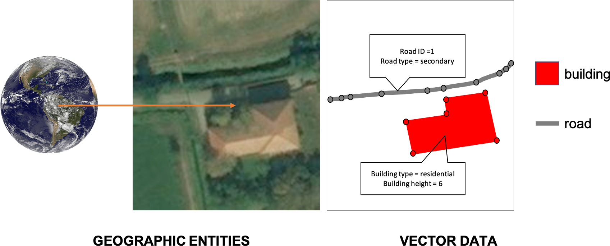

Vector Data¶
I modelli Data Vector descrivono entità geografiche come discrete objects tipo: punti, linee e poligoni. I punti sono registrati come singole paia di coordinate, linee come coppie di serie coordinate dove la prima e l’ultima coincidono. Gli attributi dei Vector Data come valori numerici, informazioni testuali e altre caratteristiche non spaziali di ogni oggetto vettore sono allegate alla lista coppie coordinate e linkate a ogni specifico oggetto. I Vector Data possono essere codificati in vari formati file. Alcuni dei più popolari adottati da GIS sono Shapefile e GeoJSON.
I vector data forniscono una visione più nitida e scalabile delle entità geografiche, la perdita di accuratezza nella rappresentazione delle immagini è minima dato che i confini delle entità vengono delineati con i valori delle coordinate. Con i vector data è più intuitivo e semplice per gli utenti in confronto ai raster data grazie alla rappresentazione intuitiva delle entità. Per questo motivo GIS da l’opportunità di modificare manualmente e scegliere uno stile a piacere da applicare ai vector data sulla mappa.
La dimensione in memoria dei file contenenti dati vettoriali dipende da quanti oggetti sono mappati, e per linee e poligoni dipende dal numero di coordinate che le definiscono. Anche tipo e quantità di attributi influiscono sulla dimensione. Il numero di vertici e di attributi aumentano il livello di dettaglio e, di conseguenza, il peso del file. Le operazioni matematiche sono più lente da computare rispetto alle immagini raster, L’uso di dati vettoriali è indicato per applicazioni cartografiche di grande dettaglio, ma di quantità limitata di oggetti o di area limitata.